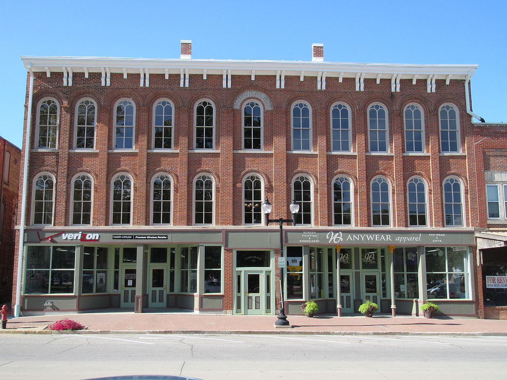

Checkpoint: Mount Pleasant
Welcome to Mount Pleasant, Iowa! Mount Pleasant is also a county seat, like many other towns
that are used as checkpoints for the state of Iowa. This time, it's the county seat of Henry County, with the first permanent settlement here being in 1833, and it being
incorporated as a town in 1842, and again in 1851.
Pictured to the left is the Union Block Building, in which Arabella A. Mansfield became the first woman in America to be given a liscence to practice law (image coutesy of
Vkil - photo, CC BY-SA 3.0, Link).
The third floor of this building housed the Opera House, or Union Hall, which hosted speakers such as Frederick Douglass, Sojourner Truth, and Anna Dickinson. Unfortunately,
this building is now considered among the most endangered historic sites in Iowa.
During a city council meeting on December 10, 1986, city resident Ralph Orin Davis walked into the meeting, and shot Mayor Edward King, as well as two city council members.
Mayor King died of his wounds, as he was shot point blank in the head, and the two members of city council were seriously wounded, but survived. Davis had attended a few
of the previous meetings, complaining about a backed-up sewer, and asking that the city pay for damages to his hosue.
Dark history aside, Mount Pleasant has been home to several notable people throughout its life. Some of these people include James Van Allen, considered to be one of the country's
foremost space scientists, the aforementioned Arabella Mansfield, the first female lawyer in the United States, Henry Kriger-Coble, an NFL tight end, and Ricky Phillips, the bass
player for bands such as The Babys and Bad English, but is currently with the band Styx.
To further explore Mount Pleasant, click here
Pedaling for Parkinsons claims no affiliation with Google Street View